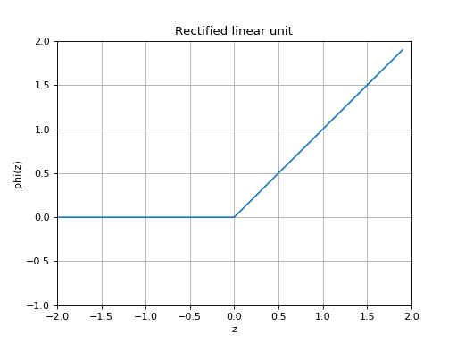

Activation¶
Neural networks rely on a nonlinear transformation to learn nonlinear relationships in data. These nonlinear transformations are typically fixed functions that are applied after a linear transformation of the data. The linear transformation uses learned weights, while the nonlinear function is fixed in that there are no learned parameters. In most cases, these nonlinear functions can be thought of as activation functions that indicate the state of a unit within a layer of a neural network, given some data.
-
class
slugnet.activation.ReLU[source]¶ Bases:
slugnet.activation.ActivationThe common rectified linean unit, or ReLU activation funtion.
A rectified linear unit implements the nonlinear function
 .
.(Source code, png, hires.png, pdf)

-
class
slugnet.activation.Sigmoid[source]¶ Bases:
slugnet.activation.ActivationThe common sigmoid activation function.
The sigmoid function is given by
 .
.(Source code, png, hires.png, pdf)
 , which is equivalent to
.
, which is equivalent to
.{kind=link}
{kind=link}
{kind=link}
{kind=link}
{kind=link}
{kind=link}